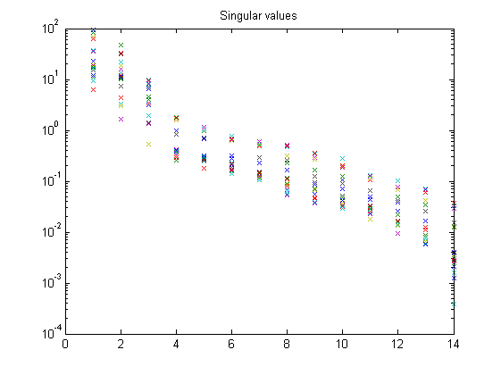

Contents
Example 22: Third-order SIMO Periodic-LPV model
close all; clear; clc;
Periodic third-order LPV model
% System matrices A1 = [0 0.9 0.2; -0.9 0.5 0; -0.2 0 0.2]; A2 = [0.60 -0.5 0.5; 0.50 0.60 0; -0.5 0 0.6]; A12 = [A1 A2]; B12 = [1 0.4; 1 0.2 ; 1 0.12]; C12 = [0.2 1 0.5 0.2 0.1 1; 0.2 0.1 1 0.3 0.4 0.8]; D12 = [0.1 0.2; 0.2 0.1]; K0 = [0.0130 0.0225; 0.0089 0.0060; 0.0002 -0.0010]; n = size(A12,1); % The order of the system m = size(A12,2)/n; % The number of scheduling parameters r = size(B12,2)/m; % The number of inputs l = size(C12,1); % The number of outputs
Open-loop identification experiment
Simulation of the model in open loop
% Defining a number of constants j = 18; % period np = 1000; % number of periods N = np*j; % number of data points % Measured data and the scheduling parameters t = (0:N-1)'; u = randn(N,r); mu1 = 0.8*sin(2*pi*(1:N)'./j) + 0.2; mu3 = 0.8*cos(2*pi*(1:N)'./j) + 0.2; mu = [mu1 mu3]; % Simulation of the system without noise Alpv = [zeros(n) A12]; Blpv = [zeros(n,r) B12]; Clpv = [zeros(l,n) C12]; Dlpv = [zeros(l,r) D12]; Klpv = [K0 zeros(n,2*l)]; M = idafflpv(Alpv,Blpv,Clpv,Dlpv,Klpv,[],1); y0 = sim(M,u,t,mu); % Simulation of the system with noise e = 0.1.*randn(N,l); y = sim(M,u,t,mu,e); disp('Signal to noise ratio (SNR) (open-loop)') snr(y,y0)
Signal to noise ratio (SNR) (open-loop) ans = 21.1911 19.1111
Identification of the model in open loop
% Defining a number of constants p = 7; % past window size f = 7; % past window size % LPV identification without noise pnd = pschedclust(mu,f,p); [S,X,TU,K] = pordvarx(u,y,mu,f,p,pnd,'tikh','gcv',0,[0 0 0 0 1]); [x,CC] = pmodx(X,TU,K,n,1e-4,1e-8); [A,B,C,D,K] = px2abcdk(x,u,y,mu,f,p,[0 0 0 0 1],pnd); figure, semilogy(S,'x'); title('Singular values') disp('Canonical correlation coefficients') CC(1:n)
Canonical correlation coefficients
ans =
0.9993 0.9988 0.9957
 Verification results
% Simulation of identified LPV system Aidm = [zeros(n) A]; Bidm = [zeros(n,r) B]; Cidm = [zeros(l,n) C]; Didm = [zeros(l,r) D]; Kidm = [zeros(n,l) K]; Mm = idafflpv(Aidm,Bidm,Cidm,Didm,Kidm,[],1); yidm = sim(Mm,u,t,mu); disp('VAF of identified LPV system') vaf(y,yidm)
VAF of identified LPV system ans = 98.7543 98.1991